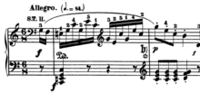

La música (del griego: μουσική [τέχνη] - mousikē [téchnē], «el arte de las musas») es, según la definición tradicional del término, el arte de crear y organizar sonidos y silencios respetando los principios fundamentales de la melodía, la armonía y el ritmo, mediante la intervención de complejos procesos psicoanímicos. El concepto de música ha ido evolucionando desde su origen en la Antigua Grecia, en que se reunía sin distinción a la poesía, la música y la danza como arte unitario. Desde hace varias décadas se ha vuelto más compleja la definición de qué es y qué no es la música, ya que destacados compositores en el marco de diversas experiencias artísticas fronterizas han realizado obras que, si bien podrían considerarse musicales, expanden los límites de la definición de este arte.
La música, como toda manifestación artística, es un producto cultural con múltiples finalidades, entre otras, la de suscitar una experiencia estética en el oyente, la de expresar sentimientos, emociones, circunstancias, pensamientos o ideas, y cada vez más, cumplir una importante función terapéutica a través de la musicoterapia.

La música cumple una función de vital importancia en el desarrollo cognitivo del ser humano. Está relacionada con el pensamiento lógico matemático, la adquisición del lenguaje, el desarrollo psicomotriz, las relaciones interpersonales, el aprendizaje de lenguas no nativas y a potenciar la inteligencia emocional, entre otros. Por este motivo, la música debe estar presente en cualquier plan educativo moderno y ser reconocida como una disciplina imprescindible dentro de la enseñanza obligatoria.
